| 日付 | 2013年5月5日（日） |
|---|---|
| 山域 | 丹沢 |
| メンバー | 家族（長女・2歳） |
| 山行形態 | 子連れ日帰り |
| アクセス | 車 |
| ルート (Map) | 鳥居原ふれあいの館 (8:34) - (9:50) 権現平 - (10:16) 南山 (11:14) - (12:22) あいかわ公園 |
GWの前半3日間は子供と旅行に行ったが、まだ休みは7日もある。
どこにも行かないと暇を持て余すので、晴れの一日を選んで
山に行くことにする。GW中は道路の混雑が予想されるので
できるだけ近い山を選ぶことにし、宮ヶ瀬湖の北岸にある南山を選択。
妻も下で待っているということで、家族3人で宮ヶ瀬湖を目指す。
鳥居原ふれあいの館に到着。標高320m。
駐車場はバイクの集団やプジョーの集団で大いに賑わっている。
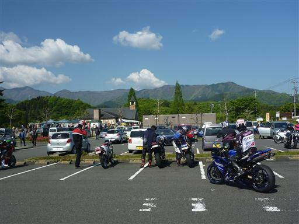
ここからは宮ヶ瀬湖を望むことができる。背後に見えているのは大山だ。
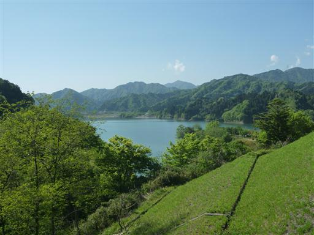
駐車場から少し車道を歩いて登山道入口に到着する。
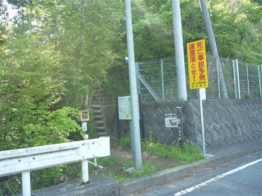
ヤマビル用忌避剤が置かれているが中身は空っぽ。
丹沢山域ではよく見かけるが中身が入っていた事がない。
子連れ登山でヤマビルに襲われるのは恐怖だが、
ここ最近雨は降っていないので、いないことを期待。
もしヤマビルがいたらゆっくり昼食をとることもできない。
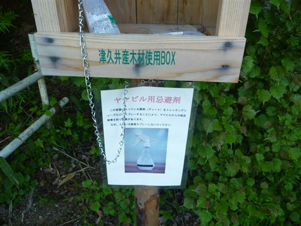
今回の登山は楽々コース。
あまり速く歩くとすぐに下山してしまうため、ゆっくりゆっくりと歩いていく。
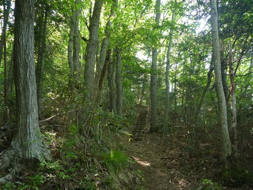
少し登ると眼下に宮ヶ瀬湖が見えてくる。

足元に咲くチゴユリ。あちらこちらに咲いている。
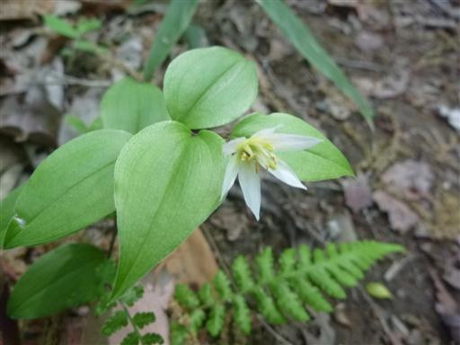
辺り一面緑に覆われている。もう新緑の季節は終わっている。
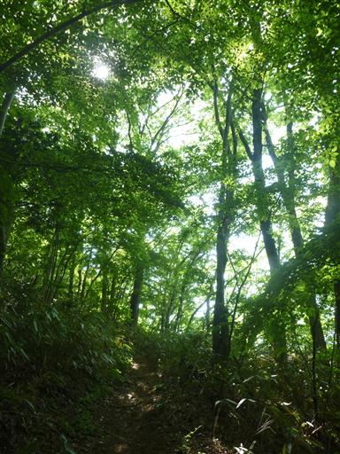
ヤブレガサ。よく目立つ葉だ。
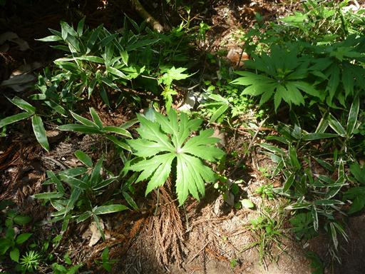
不思議な形の植物を発見。花なのか額なのかもよく分からない。
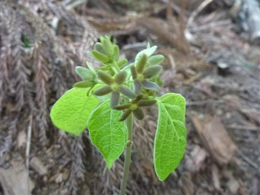
送電線鉄塔が建つ場所に出てくる。どこの鉄塔でも周辺は木がないため展望が広がる。
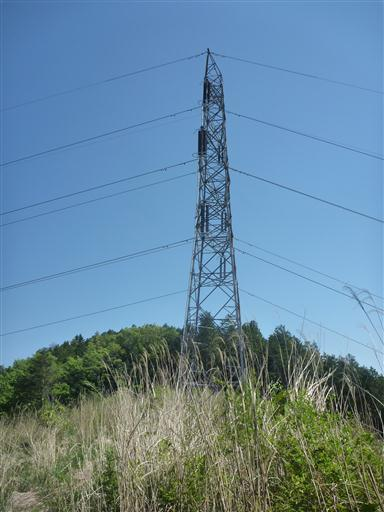
丹沢の山々の展望が広がる。
クマバチが辺りをうろうろしていたため、さっさと通り過ぎる。
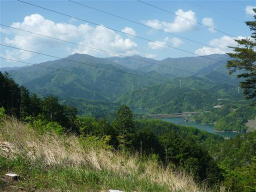
クサイチゴだろうか？よれよれの花びらだ。
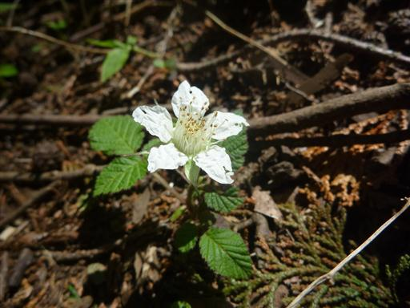
ジュウニヒトエ。
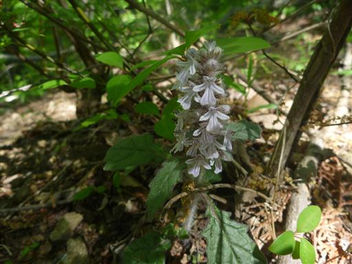
延々と続く緩やかな階段。子供を歩かせるのにちょうどよい道だが、
すでにザックに揺られて眠っている。

登山道上に比較的新しいトイレが突然現れる。
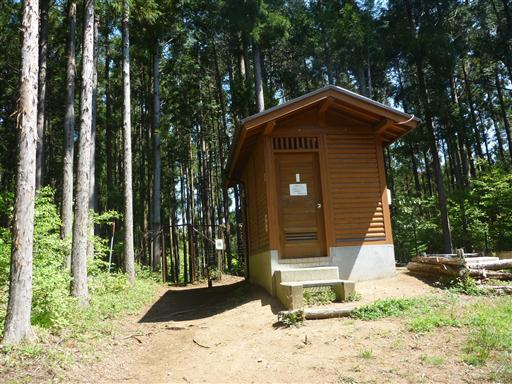
そのすぐ先に明るく開けた小平地が広がっている。権現平と呼ばれるところだ。
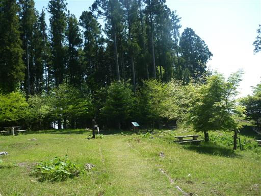
側には東屋が建っていて休憩するのに良いところだ。
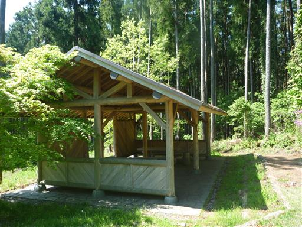
少し先には展望台が設けられている。
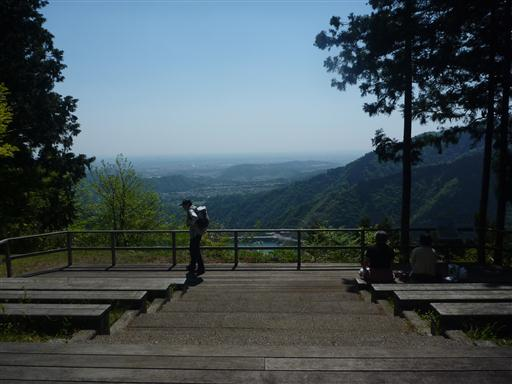
ここからは眼下に宮ヶ瀬ダムを望むことができる。
ここで昼食をとりたいところだが、まだ10時前なので先に進むことにする。
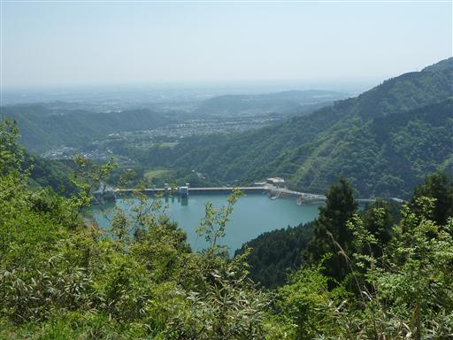
足元にスミレの花が咲いている。
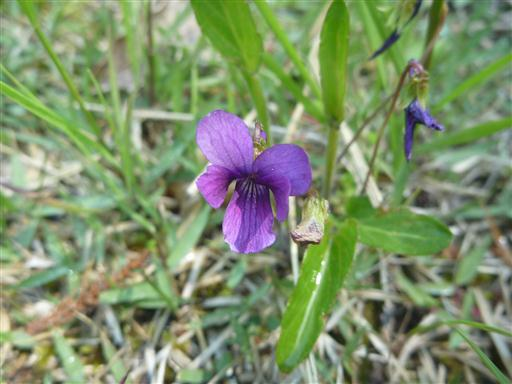
こちらはキランソウ。濃い紫色で良く目立つ。
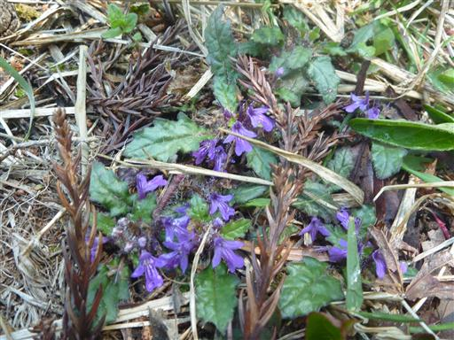
権現平のすぐ先に小さな祠が祀られている。
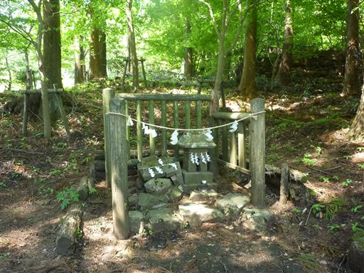
南山までアップダウンの少ない緩やかな道が続く。
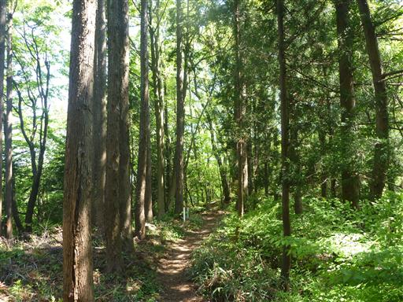
しばらく歩いて南山の山頂に到着。標高544m。
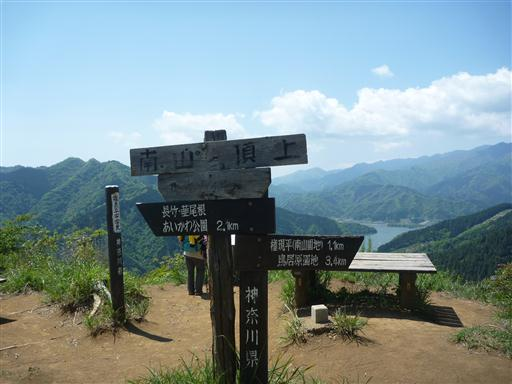
山頂からは宮ヶ瀬湖と丹沢の山々の素晴らしい展望が広がる。
周りにはクマバチがうろうろしているが、さほど危険な蜂ではないためここで腰を下ろして昼食にする。
ヤマビルの姿も今日は見かけていないので、こちらも問題はなさそうだ。
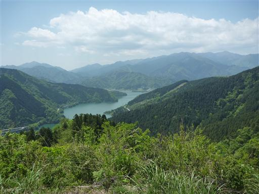
昼食をとったら下山を開始する。
山頂まではザック上で睡眠、下山時から歩きだすのがいつものパターンだ。
本当は登りの時に歩いて欲しいのだが…
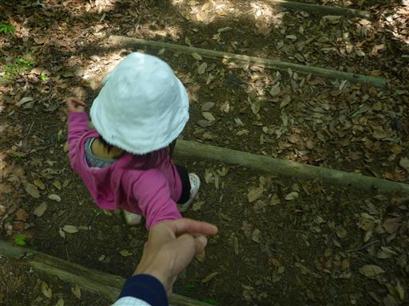
中腹に東屋が建っている。
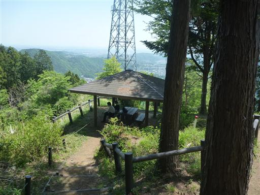
この辺りはツツジの花がたくさん咲いていてきれいだ。
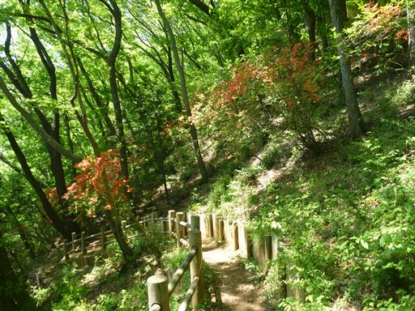
下り道はかなり急な階段が延々と続く。
歩く速度はかなり遅く、途中でザックに乗りたいと言ってきたので乗せてあげることにする。
１時間くらいは頑張って歩いてくれた。
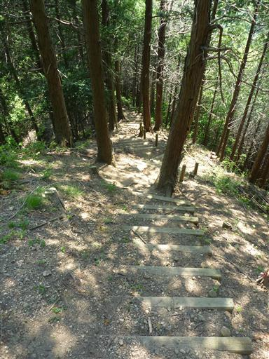
下山。あいかわ公園の裏側に出てくる。
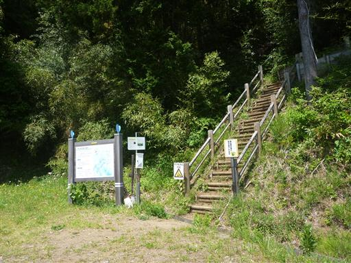
あいかわ公園に到着。思った以上に大きな公園で、ものすごい人出だ。
こちらに移動してきた妻と合流したが、駐車場に入るのに１時間かかったらしい。
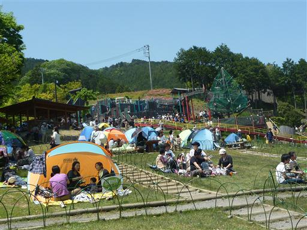
水車が水を受けてぐるぐる回っている。こどもは水車がえらく気に入ったようだ。
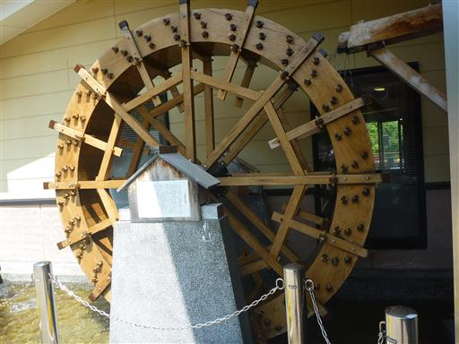
プール。まだ少し寒いが皆気持ちよさそうに遊んでいる。
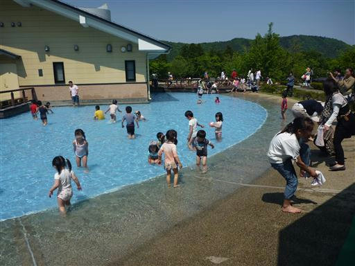
なかなか面白い施設が整っている場所なのだが、宮ヶ瀬ダム行きの
ロードトレイン「愛ちゃん号」が来たので、遊ぶのは後回しにして電車に乗り込む。
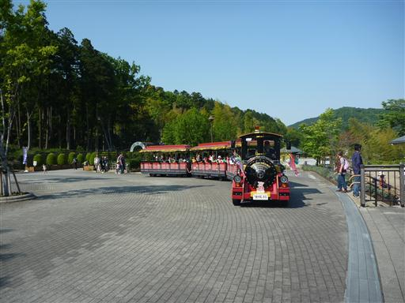
宮ヶ瀬ダムまでは1km程度。ゆっくり走る電車に揺られていると宮ヶ瀬ダムが見えてきた。
子供はさきほどの水車が見たいようで、ぐずぐず言っている。
こんなことなら満足するまで水車を見せてやればよかったと後悔。
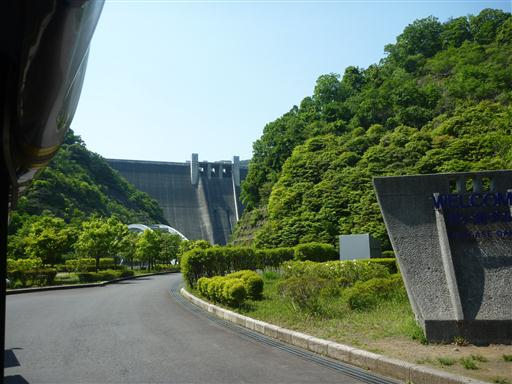
宮ヶ瀬ダム。堤高156m、日本有数の巨大なダム。
2000年に完成した比較的新しいダムだ。
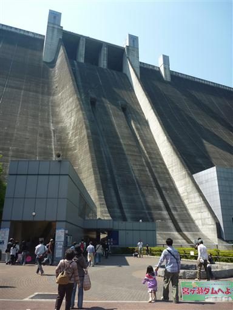
ダムの上部にはケーブルカーかエレベーターで行けるようになっている。
登りはケーブルカー、下りはエレベーターを使うことにする。
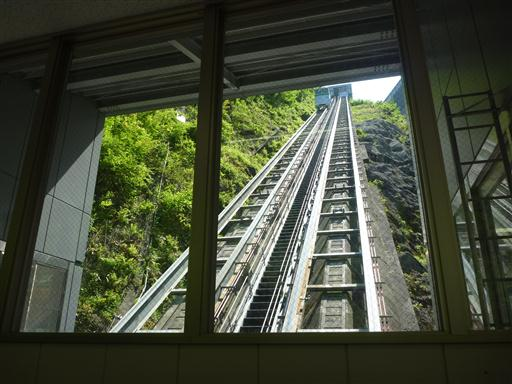
ケーブルカーからは間近にダムを望むことができる。
放水中なら迫力のある眺めが得られそうだ
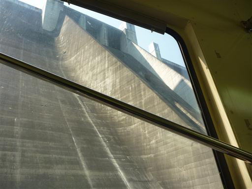
宮ヶ瀬ダムの上部に到着。
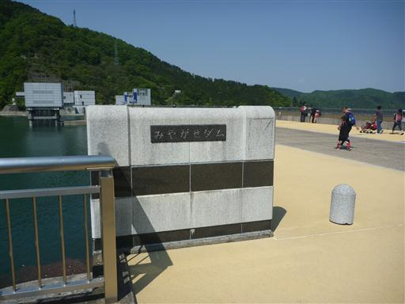
宮ヶ瀬湖。総貯水量は箱根の芦ノ湖と同程度らしい。
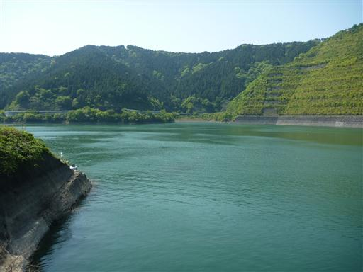
下流側の景色。遠くに見えているのがあいかわ公園だ。
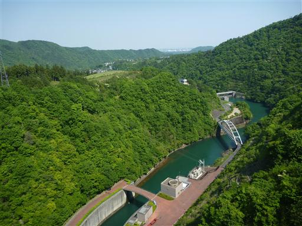
ダムの上部は非常に広い。使われているコンクリートの量は膨大らしい。
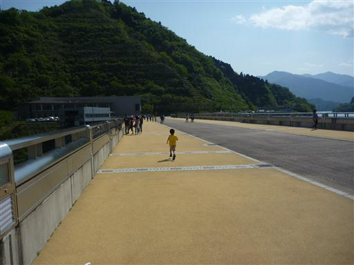
展望台から真下を眺める。凄まじい高度感だ。
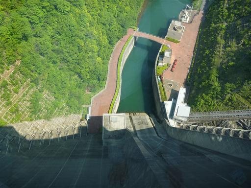
ダムを横から眺める。目の前の四角い柱はエレベーターだ。
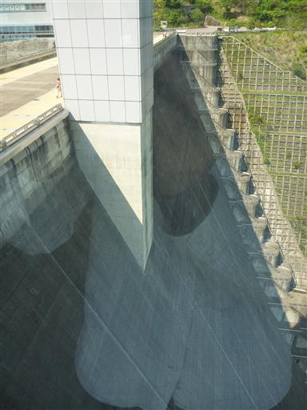
ダムの端に延々と続く階段と、その奥にケーブルカーの車線が見える。
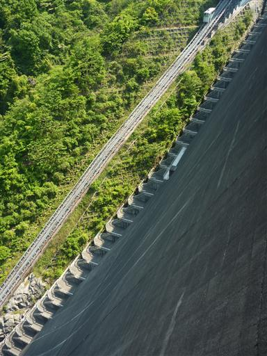
エレベーターで下りた後、コンクリートの中の通路を歩いて外に出る。
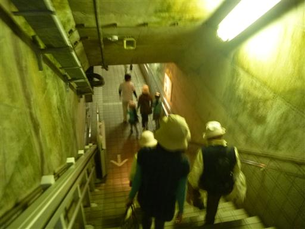
乗り物代がもったいないので、妻と子供を残して一人歩いて公園まで戻ることにする。
この距離なら歩く方が早い。
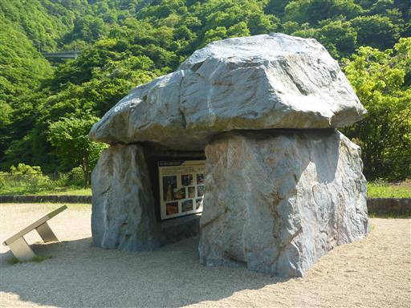
石小屋ダム。宮ヶ瀬ダムのすぐ下流にある小さなダムだ。
宮ヶ瀬ダムから放水した水の量を調節するためにつくられた。
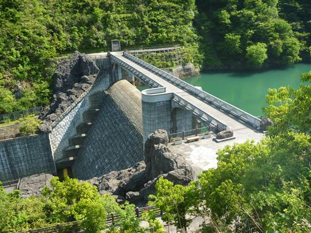
子供をなだめつつなだめつつダム観光をし、ようやく水車まで戻ってきた。
最近くるくる回るものが好きらしく、ずっと見つめている。
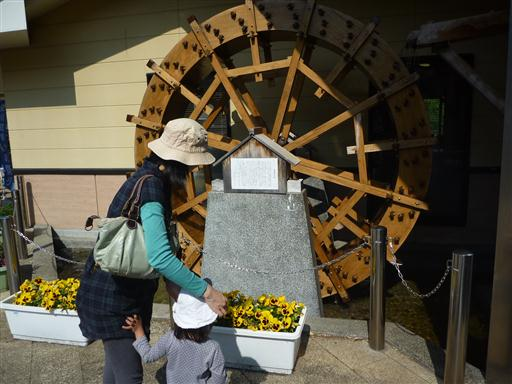
公園で少し遊んで帰ることにする。
3時をまわっているのに駐車場はまだいっぱい、帰りの道路は大混雑だった。
あいかわ公園は無料の施設で、遊び場がたくさんある良い公園だった。
GWはかなり混雑していたが、また空いている次期に訪れてみようと思う。
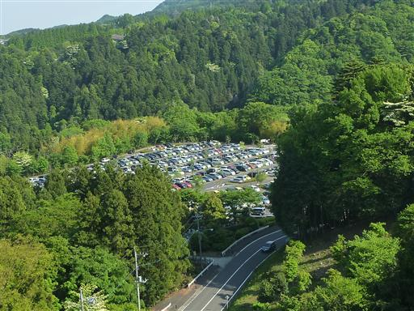